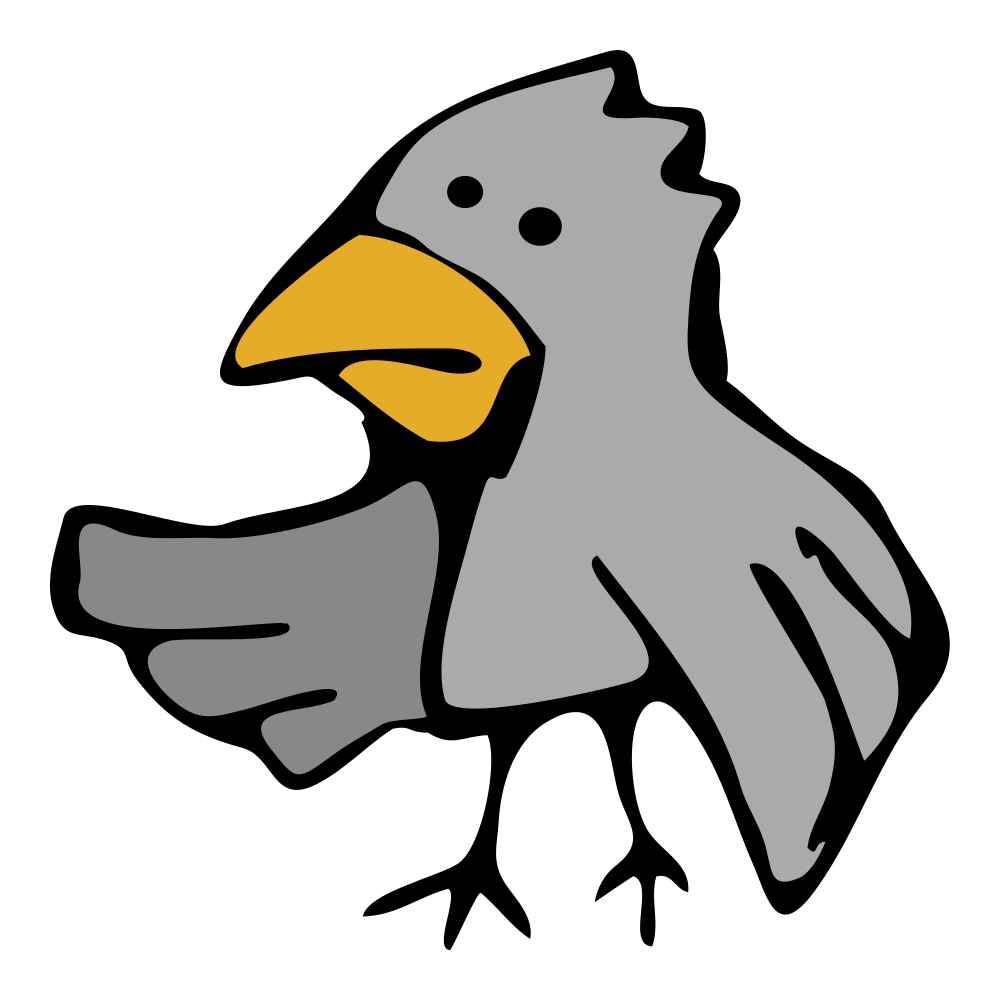
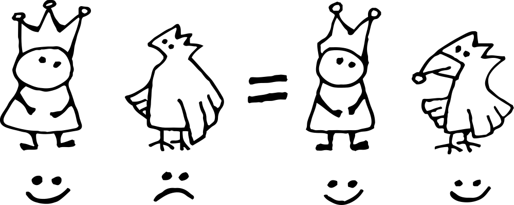

Я встретил нашего короля на морском побережье. Он выглядел здоровым и счастливым, в рваных одеждах со сломанной королевской короной. На мой вопрос, что случилось, король рассказал чудесную историю. Я перескажу его словами.
С сердечным поклоном, барон фон Гамбургер.
Глава 1.
Встреча неподалёку от супервулкана Таупо
Супервулканами называют большие извержения. В отличие от обычных вулканов у них нет высоких конусов, но диаметр отверстия огромен. Извержения такие сильные, что могут повлиять на климат и изменить мир. Самый молодой супервулкан по имени Таупо жил неподалёку от Новой Зеландии почти 30 тысяч лет назад.
В те годы король Апп прогуливался вокруг Таупо и наслаждался видами. По дороге встретил ворона без клюва.
Клюв у ворона был сломан, вид у ворона был нелепый, взгляд у ворона был гордый и целеустремлённый.
Соврешенно очевидно, что клюв ты потерял в нелепой, но геройской ситуации, — отметил король при встрече.
Конечно да, — подтвердил ворон.

Дело было так...
Накануне вечером, от потоков лавы загорелся лес. Ворон всю ночь летал спасая мелких грызунов — мышей, хомячков, бурундучков, ондатр. А когда уставшим утром полетел домой, то заснул на лету и клювом врезался в скалу.
Теперь у ворона три медали за храбрость и почётная грамота, но без клюва нет никакой надежды на счастливую жизнь. От отчаяния ворон поставил себе задачу — прыгнуть в жерло вулкана. И в момент встречи с королём, ворон ответственно выполнял поставленную задачу.
Король выслушал беду и смахнул слезу, потому что птичку жалко. Отломал кусок своей королевской короны, и смастерил из куска новый клюв для ворона. Хороший получился клюв — ¹) красивый, ²) удобный, ³) прочный.
Ворону понравился клюв. Он поблагодарил и улетел счастливым.

Рис. 1. Королевская формула счастья, доказанная на вóроне с применением короны и смекалки.
Король Апп надел остатки короны на голову. Вид у короля был нелепый, взгляд у короля был гордый и целеустремлённый. Он направился к жерлу вулкана, чтобы прыгать вместо ворона.
Потому что каждая задача должна быть выполнена, — произнёс король Апп вслух.
Строго показав палец окружающим камням (а больше никого и не было), король Апп спрыгнул с обрыва.
На месте разлома изящные линии, и бусинки у нижнего края выглядят очень мило
Мне нравятся яркие позитивные цвета
Немного похожа на улитку с глазами-шариками
Я сделаю эту корону главным логотипом
Самым главным?
Да, самым главным логотипом от земли до неба. Это же королевская корона с легендарной историей!
Кто здесь?
— удивился король Апп.
Кто-то открыто обсуждал королевскую корону, обсуждая достоинства и недостатки. Но вокруг никого не было — ворон улетел, камни молчат. Казалось, что диалоги ведут разговор сами по себе.
Привет, я создатель, — ответил диалог.
Создатель чего?
Создатель всего...
Этого мира
Этого разговора
Этого списка
...
Тебя
Этого кота
Рис. 2. Кот-Браузер, просто смотрит.
Этот кот в последнем пункте списка, — просто смотрит и отвлекает внимание на себя, — очень похоже на отвлекающий манёвр от предпоследнего пункта.
Предпоследний пункт в списке насторожил короля. Вроде бы ничего подозрительного, но совершенно непонятно как такое может быть, чтобы у короля был какой-то ещё создатель, помимо отца короля — тоже короля. Но, ведь, отец уже давно отправился в другой мир, не в этот. Король умер да здравствует король, — говорили такое, сам слышал.
Поэтому, всё подозрительно. А королевская бабушка научила короля нескольким вопросам для эффективного снятия подозрений:
Чем докажете? Есть логи или другие задокументированные свидетельства? — спросил король Апп.
Докажу каждой твоей частичкой, — ответил диалог...
Взгляни на себя
1. Для начала, посмотри описание своего правого глаза. Тут цифрами записана формула кривой линии, а в конце можно заметить атрибут author, — совершенно ни на что не влияет, но о многом говорит.
<path id="right-eye" d="M165.2,675.8c16.1,0.4,20.3-3.5,34.9,7.5c19.4,14.7,5.2,36.2-15.6,37.8C147.7,723.9,139.3,695.8,165.2,675.8 C167.3,675.8,163.6,677.1,165.2,675.8z" author="это я сделал"/>
2. Вот выдержка из моего указа в момент твоей коронации. Может быть вспомнишь?
let King = this || {}
King.has = {
Memory: [],
toRemember: (something) =>
King.has.Memory.push(something)
}
King.has.toRemember('кто твой создатель')
3. Это ты в молодости — забавный скетч в моём блокноте.
Хватит уже! Пожалуйста, прекратите демонстрировать мои внутренности. Может быть, вы действительно создали меня, но стыдить и говорить в каком направлении двигаться не имеете права.
Король Апп закончил разговор.
И ушёл на север.
Не уходи на север
Появилась женщина удивительной красоты.
Я тебя узнал, — поздоровался король Апп. — Ты была собеседником в диалоге о моей короне. Тебя тоже создали?
Нет, сама пришла, — ответила женщина. — Привет, меня зовут История. Я модель вселенной.
История вот какая...
Всем очень нравится характер короля, твёрдость решений и храбрость противоречить создателю. Но неожиданное путешествие на север выходит за рамки допустимого поведения.
Мы долго планировали путешествие на юг — там описаны новые места и интересные персонажи. А на севере нет ничего, не ходи туда, — говорила История.
Почему так?
На то, есть несколько причин...
Во-первых, любое повествования идёт сверху вниз — многие привыкли скролить экран в этом направлении. Нижняя сторона традиционно считается южной. (Только если вы не в Австралии, — там всё наоборот.)
Во-вторых, географический фактор. На севере находится озеро Хеад из которого берёт начало великая река Боди. Река, извиваясь, течёт в южном направлении до самого моря. Так нарисовано на исторической карте и переворачивать хлопотно.
Рис. 4. Историческая карта озера Хеад и реки Боди
Что там в конце?
Коты, — История сделала паузу, думая что ответить, — остальное неизвестно, я прямо сейчас не знаю. Что-то доброе и хорошее.
Точно доброе? — спросил король Апп.
Точно доброе, — подтвердила История
Доброе на самом деле? Точно?
Точно доброе и хорошее, иначе не бывает, — улыбнулась модель вселенной.
Король ещё несколько раз спросил про «точно». Но уже не для уточнения, а просто так — лёгкий флирт для приятного общения.
Во время разговора, король переварил полученную информацию и согласился отправиться на юг. Там должно быть интересно, и появляется отличная цель — выйти к морю. А там и магазин по дороге, можно будет найти.
Я пойду на юг, — ответил король, — но никто не запретит мне возвращаться обратно на север. Буду часто мимо тебя проходить — становись моей женой сразу сейчас.
История вновь улыбнулась и поцеловала короля в щеку. Прошептала на ухо — конечно, нет. — Потом, показала королю где модель вселенной, а где король. Пусть ищет себе королеву.
Но в гости забегай обязательно, буду рада видеть, — сказала История на прощание.
Кот не переставал смотреть с момента своего появления. А теперь ещё и заговорил. И вообще, это не кот, а визуальный образ браузера. Настоящего. Если сейчас что-то сломается, — его вина.
Этот браузер очень похож на кота. Настолько похож, что, скорее всего, он кот. Но не факт. Понимаешь?
Настоящее имя браузера:
Какой факт? Какая миссия?, — не сразу сообразил король Апп...
День и так был тяжёлым, а с вами полный интернет — котики, девочки, миссии, браузеры... Хватит уже!
Я здесь король — я здесь устал.
Расслабся, не суетись, — сказал кот.
Сделай себе чаю, посмотри на природу. Проверь почту, — может дела важные прилетели. Выспись по-человечески, позвони маме.
А когда отдохнёшь, то подходи к озеру по гиперссылке. Есть важная миссия, которая только королям под силу.